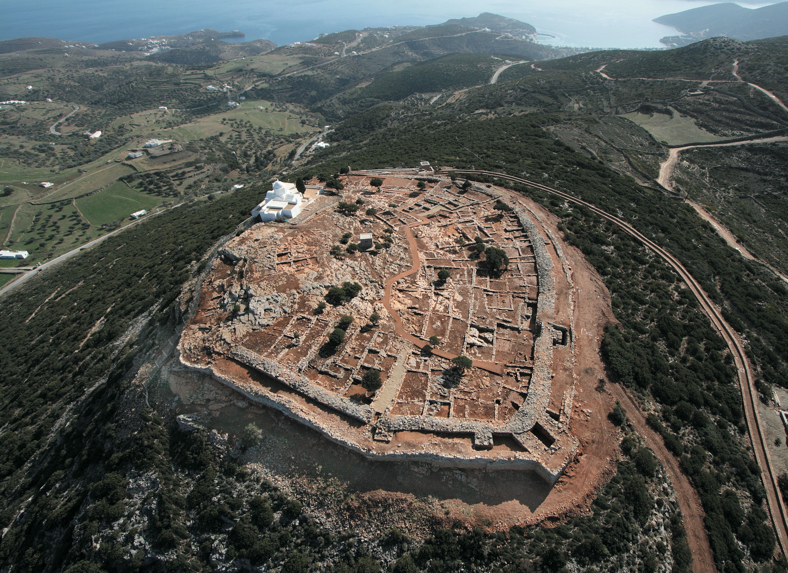

Νεολιθική και Μυκηναϊκή Περίοδος (5000-1100 π.Χ.)

Οι πρώτες ενδείξεις ανθρώπινης παρουσίας στον βράχο της Ακρόπολης χρονολογούνται από τη Νεολιθική εποχή (5000-3000 π.Χ.), όπως αποδεικνύουν ευρήματα κεραμικών και υπολειμμάτων κατοικιών. Κατά τη Μυκηναϊκή περίοδο (1400-1100 π.Χ.), ο βράχος μετατράπηκε σε οχυρωμένο οικισμό με την κατασκευή των περίφημων Κυκλώπειων Τειχών, που έφεραν το όνομα "Πελασγικό Τείχος".
Το τείχος αυτό, κατασκευασμένο από τεράστιους ογκόλιθους, περιέβαλλε την κορυφή του λόφου και προστάτευε το ανάκτορο του τοπικού μυκηναϊκού ηγεμόνα, που βρισκόταν στη θέση του μετέπειτα Ερεχθείου. Στον χώρο υπήρχαν επίσης πολλοί βωμοί και ιερά, καθώς και η ιερή πηγή "Κλεψύδρα", που παρείχε νερό στους κατοίκους κατά τη διάρκεια πολιορκιών.
Κατά τη μεταβατική περίοδο μεταξύ Μυκηναϊκής και Αρχαϊκής εποχής (11ος-8ος αι. π.Χ.), η Ακρόπολη διατήρησε τον θρησκευτικό της χαρακτήρα, ενώ οι κάτοικοι των γύρω συνοικισμών άρχισαν να τη θεωρούν ως το ιδεατό κέντρο της λατρείας τους. Αυτή η εξέλιξη οδήγησε στην κατασκευή του πρώτου μεγάλου ναού, του λεγόμενου "Εκατομπέδου", στη θέση όπου αργότερα ανεγέρθη ο Παρθενώνας.